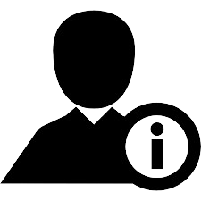
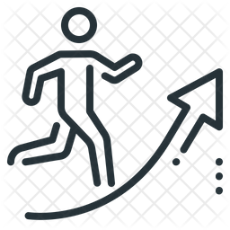

Pratiksha Dutta
Personal Details
- Email: pratiksha.dutta0509@gmail.com
- Phone: +1 (514) 250-8614
- Address: Montreal, QC H3H 1H7
- Language: English, French, Hindi, Assamese
Career Objective
A hard working and passionate IT professional with a corporate experience in Security Operations and Control Engineering as well as in Vulnerability Management. Eagerly seeking an opportunity to advance my education and augment IT proficiency in the realm of Information Technology, with a focus on fostering a growth-oriented career in the field.
 Education
Education
- Attestation d'études Collégiales (IT Programmer Analyst), College LaSalle, Montreal 2023-present
- Bachelor of Technology (Computer Science Engineering), Gauhati University, India 2016-2020
 Skills and Abilities
Skills and Abilities
- Front-end: Web Development
- Back-end: Oracle Database
- Programming Language: C,C++,C#,Java,Python,IOT
- Tools: MS Office | MS Excel (VLookup, Pivot, Macros) | TENABLE NESSUS | SPLUNK | CROWDSTRIKE | KENTIK | SERVICE- NOW.
- Interpersonal Skills: Strong verbal and Written Communication,Team-player,Punctual, Adaptable,Reliable,Detail-Oriented
Work Experience
-
Wipro Limited, Bangalore, India April 2021- June 2023
- Security Operations and Control Engineer
- ➢ Worked as a SOC Analyst for McGraw Hill Education, USA client
- ➢ Monitoring and Analyzing real-time security alerts in the SIEM tool Splunk along with being aware and vigilant towards any cybersecurity incidents
- ➢ Demonstrating work integrity adhering to organizational expectations
- Vulnerability Management Analyst
- ➢ Worked as a VM analyst for Mount Sinai Hospital, New York, USA client.
- ➢ Discovery, Identification, Assessment, Remediation and Tracking of vulnerabilities in the IT environment and their risks.
- ➢ Appreciated for fulfilling all Business-as-Usual activities/goals following work ethics and displaying constructive teamwork.
- ➢ Actively delivered reports to client recommending solutions to mitigate vulnerabilities and actively participated in meetings.
-
McDonald's, Montreal, Canada (September 2023 - present)
- ➢ Roles in food preparation, drive-thru, and dining area maintenance.
- ➢ Contributed to a positive team environment.
 Certifications, Trainings and Internships
Certifications, Trainings and Internships
- ❖ Splunk> Core Certified User, February 2023
- ❖ Microsoft Azure Fundamentals AZ900 Certification, May 2022
- ❖ Wipro Limited, Bangalore- L1 Training, April 2021
- ❖ Assam Agricultural University, Jorhat- Summer Research Intern, July 2019
- ❖ Indian Oil Corporation Limited, New Delhi- Winter Intern, January 2019
- ❖ Technomate Edubotics Pvt Ltd, Guwahati- Summer IOT Intern, June 2018